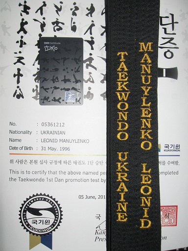

Я Мануйленко Леонид Витальевич. Раскажу вам про свое увлечение спортом. А конкретно про Тхеквондо
Тхэквондо́ (кор. 태권도?, 跆拳道?), также таэквондо́ (калька с англ. Taekwon-do) — корейское боевое искусство. Характерная особенность — активное использование ног в бою; причём как для ударов, так и для блоков.
Слово «тхэквондо» складывается из трёх слов: [тхэ] «топтать» + [квон] «кулак» + [до] «путь, метод, учение, дао». По определению Чхве Хон Хи: « тхэквондо означает систему духовной тренировки и технику самообороны без оружия, наряду со здоровьем, а также квалифицированным исполнением ударов, блоков и прыжков, выполняющихся голыми руками и ногами для поражения одного или нескольких соперников.

Заниматься начал 23 октября 2003 года - занимаюсь по сегодняшний день.
Мои достижения:
- Кандидат в мастера спорта
- Бронзовый призер Чемпионата Украины 2009г
- Победитель международного турнира класса "А"
- Победитель турнира "Кубок причерноморья"
В период с 2012 по 2014 работал тренером
Тренировки посещал в городе Херсоне. Спортивная школа "Атака"